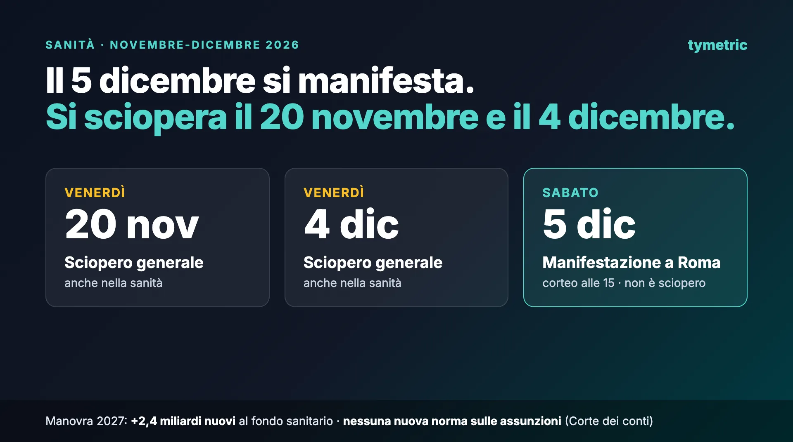

Sabato 5 dicembre a Roma la sanità pubblica scende in piazza, ma non sciopera. Molti titoli parlano di sciopero. Il comunicato dei promotori, però, convoca una manifestazione nazionale, e all'11 novembre il calendario della Commissione di garanzia sugli scioperi non riporta nulla per quel giorno. Chi organizza i turni deve guardare piuttosto a due venerdì, il 20 novembre e il 4 dicembre, quando sono proclamati scioperi generali che riguardano anche la sanità.
📌 In breve
- 5 dicembre: manifestazione nazionale a Roma, corteo alle 15 da piazza Vittorio Emanuele II a via dei Fori Imperiali. Nessuno sciopero proclamato.
- 20 novembre e 4 dicembre: scioperi generali nazionali, che toccano anche la sanità. Valgono le regole sulle prestazioni indispensabili.
- 2,4 miliardi di risorse nuove per il fondo sanitario nel 2027, che arriva a 146,3 miliardi.
- Per la Corte dei conti il disegno di legge non introduce nuove norme sulle assunzioni.
Sciopero o manifestazione?
Il comunicato unitario del 10 novembre porta 26 firme, che corrispondono a 27 organizzazioni, perché una firma unisce due associazioni studentesche. Ci sono sindacati dei medici come Anaao Assomed e CIMO-FESMED, sindacati del comparto come FP CGIL, Nursind e Nursing Up, e associazioni di specializzandi e di studenti. Il testo chiama a raccolta medici, veterinari, infermieri, ostetriche, professioni sanitarie, tecnici, amministrativi, studenti, specializzandi e ricercatori:
«Il corteo partirà alle 15:00 da Piazza Vittorio Emanuele II e arriverà in Via dei Fori Imperiali.»
— Comunicato unitario delle organizzazioni promotrici, 10 novembre 2026
Nel comunicato non compaiono le parole sciopero o astensione dal lavoro. Il 5 dicembre è un sabato, e nel calendario della Commissione di garanzia, che raccoglie gli scioperi proclamati nei servizi pubblici essenziali, per quel giorno non c'è nulla. Non firmano nemmeno FNOMCeO e FNOPI, le federazioni degli ordini dei medici e degli infermieri, anche se entrambe, nella discussione sulla manovra, hanno chiesto più risorse per la sanità.
Uno sciopero per il 5 dicembre potrebbe ancora arrivare. La legge chiede però un preavviso di almeno dieci giorni, quindi la proclamazione dovrebbe esserci entro il 25 novembre: conviene ricontrollare il calendario prima di chiudere il piano di dicembre.
Cosa cambia per i turni del 5 dicembre
Senza sciopero non ci sono contingenti minimi né personale comandato. Chi è in turno lavora; chi vuole partecipare chiede ferie o un cambio turno, come per qualunque altro giorno. Per il comparto, il contratto in vigore dice che le ferie si fruiscono:
«previa autorizzazione espressa e tempestiva, e comunque non oltre 15 giorni dalla richiesta, [...] in periodi compatibili con le esigenze di servizio»
— CCNL Comparto Sanità 2022-2024, art. 35, comma 10
L'azienda deve quindi rispondere entro 15 giorni, e può dire di no se il servizio non lo permette. Per i medici dipendenti valgono le regole del contratto della dirigenza.
Il problema pratico è un altro. Le richieste rischiano di concentrarsi sullo stesso sabato, e in un reparto piccolo bastano due o tre assenze per scoprire un turno. Meglio decidere prima il criterio, per esempio l'ordine di arrivo o una rotazione, e comunicarlo, invece di scegliere caso per caso.
In Tymetric ogni richiesta di assenza arriva con un'analisi: quanto è sicuro approvarla senza mettere a rischio la copertura, e quanto pesa sulle altre richieste in attesa. Il calcolo tiene conto dei legami tra i turni, come lo smonto dopo la notte e le 11 ore di riposo.
Sciopero generale del 20 novembre e del 4 dicembre: cosa riguarda la sanità

All'11 novembre il calendario della Commissione di garanzia riporta due giornate di sciopero generale che coinvolgono anche la sanità:
- venerdì 20 novembre: sciopero generale di tutti i settori pubblici e privati proclamato dalla CGIL per l'intera giornata, insieme ad altri scioperi generali di sigle più piccole;
- venerdì 4 dicembre, il giorno prima del corteo: sciopero generale dei sindacati di base, tra cui CUB, SGB e SI Cobas, e di USI 1912. In Liguria, lo stesso giorno, FP CGIL e UIL FPL hanno proclamato uno sciopero regionale della sanità per l'intera giornata.
Il calendario cambia con revoche e nuove proclamazioni: la versione aggiornata è sul sito della Commissione.
Le regole quando c'è uno sciopero
La sanità è un servizio pubblico essenziale: durante uno sciopero vanno garantite le prestazioni indispensabili (legge 146/1990), anche quando lo sciopero è generale. I dettagli sono in tre accordi nazionali del 2001: uno per il comparto, uno per la dirigenza medica e veterinaria, uno per la dirigenza sanitaria, professionale, tecnica e amministrativa. Per chi fa i turni, i punti sono questi:
| Cosa | Regola | Dove |
|---|---|---|
| Preavviso | Almeno 10 giorni. I cittadini vanno informati almeno 5 giorni prima. | L. 146/1990, art. 2, cc. 5-6 |
| Contingenti | Li fissano i regolamenti delle aziende, sulla base di protocolli d'intesa con i sindacati. | Accordi del 2001, art. 3 |
| Servizi di urgenza | Pronto soccorso, rianimazione e terapia intensiva, unità coronariche, grandi ustionati, emodialisi, parto, neonatologia, ambulanze e trasporto infermi: resta in servizio il personale normalmente previsto nel turno. | Accordi del 2001, artt. 2 e 3 |
| Altre prestazioni indispensabili | Il contingente dei giorni festivi, se sono prestazioni garantite anche nei festivi. | Accordi del 2001, art. 3 |
| Chi deve lavorare | I nomi si comunicano ai sindacati locali e agli interessati entro il quinto giorno prima dello sciopero. | Accordi del 2001, art. 3, c. 3 |
| Chi è nel contingente e vuole scioperare | Entro 24 ore dalla comunicazione può chiedere di essere sostituito, se la sostituzione è possibile. | Accordi del 2001, art. 3, c. 3 |
| Adesione | Nessun obbligo di dichiararla in anticipo. | L. 146/1990 e accordi del 2001 |
| Periodi esclusi | Agosto, dal 23 dicembre al 7 gennaio, dal giovedì prima di Pasqua al martedì dopo. | Accordi del 2001, art. 4, c. 5 |
In pratica, per lo sciopero del 20 novembre i nomi vanno comunicati entro domenica 15 novembre; per quello del 4 dicembre, entro domenica 29 novembre.
Cosa c'è davvero nella manovra
La manovra 2027 è ancora un disegno di legge. È stata presentata alla Camera il 30 ottobre e, dopo lo stralcio di alcuni articoli il 4 novembre, è diventata l'A.C. 3174-bis, in prima lettura in commissione Bilancio. I numeri possono cambiare con gli emendamenti. Per la sanità la fonte più chiara è la memoria che la Corte dei conti ha depositato il 9 novembre per l'audizione in Parlamento:
| Fondo sanitario nazionale, milioni di euro | 2027 | 2028 | 2029 |
|---|---|---|---|
| Con le leggi in vigore | 143.892 | 144.764 | 145.826 |
| Aumento previsto dalla manovra | 2.365 | 2.352 | 2.399 |
| Totale con la manovra | 146.257 | 147.116 | 148.225 |
| In percentuale del PIL | 6,1% | 5,9% | 5,8% |
Da qui nascono due cifre che girano entrambe, e sono entrambe giuste. Rispetto al 2026 il fondo cresce di 3,4 miliardi, ma i soldi nuovi sono 2,4:
«L'incremento del finanziamento previsto per il 2027, pari complessivamente a 3,4 miliardi di euro, si compone di 2,4 miliardi di nuove risorse e di un miliardo derivante dagli effetti della legislazione vigente.»
— Corte dei conti, memoria sul disegno di legge di bilancio 2027, p. 60
In rapporto al PIL il finanziamento resta al 6,1% nel 2027, poi scende al 5,9% e al 5,8%. Il 6,3% che si legge in alcuni articoli è un'altra misura: la spesa sanitaria prevista nel documento programmatico di ottobre.
Dove vanno i 2,4 miliardi del 2027
- 500 milioni per aggiornare le tariffe dei ricoveri per acuti, ogni anno fino al 2029;
- 479 milioni per adeguare in automatico tetti di spesa con finalità specifiche;
- 380 milioni l'anno per l'indennità del personale di pronto soccorso: 114 per i medici, 266 per il comparto;
- 307 milioni l'anno associati alle assunzioni delle Regioni, secondo un meccanismo già in vigore;
- 300 milioni, solo nel 2027, per le prestazioni aggiuntive contro le liste d'attesa: 213 per i medici, 87 per il comparto;
- 146 milioni per il tetto di spesa dei dispositivi medici, 100 milioni per l'assistenza ai malati di Alzheimer e di altre demenze, 15 milioni per i servizi psicologici e terapeutico-riabilitativi;
- 138 milioni senza un vincolo di destinazione, che le Regioni possono usare anche per far fronte all'inflazione.
Le risorse libere sono quindi il 5,8% dell'aumento. Le Regioni, nel documento del 22 ottobre, avevano chiesto 6,8 miliardi in più per il 2027, di cui 1,7 miliardi per il personale e, tra questi, 1,1 per gli infermieri.
E l'1,6 miliardi per gli over 75?
È una carta da 300 euro per chi compie 75 anni entro il 31 dicembre 2026 e nel 2025 ha avuto pensioni o assegni fino a 28.000 euro in tutto (art. 53). Il fondo, 1,645 miliardi, sta nel bilancio del Ministero del Lavoro e passa all'INPS: non fa parte del fondo sanitario e non va sommato ai 2,4 miliardi.
Le assunzioni: cosa dice la Corte dei conti
Per chi costruisce i turni è il punto più importante. Dei 2,4 miliardi, 307 milioni l'anno sono collegati alle assunzioni delle Regioni, ma la Corte precisa che vengono da un meccanismo che esiste già, quello del decreto-legge 73 del 2024:
«[...] il disegno di legge in esame non introduce nuove disposizioni in materia di assunzioni di personale.»
— Corte dei conti, memoria sul disegno di legge di bilancio 2027, p. 63
Le altre misure sul personale pagano di più chi è già in servizio. Le prestazioni aggiuntive contro le liste d'attesa, cioè ore pagate in più agli stessi medici e infermieri, nel 2027 scendono da 423,5 a 300 milioni (−29,2%). L'indennità di pronto soccorso cresce. Per la Corte sono misure che «sostengono l'attività del personale in servizio e ne valorizzano le condizioni di lavoro, senza tuttavia prevedere nuove assunzioni o ampliamenti delle dotazioni» (p. 65).
Due misure toccano direttamente i turnisti. Nel 2027 il salario accessorio del personale pubblico non dirigente, di cui fanno parte le indennità di turno, notte e festivi, sarebbe tassato al 15% fino a 800 euro, per chi nel 2026 ha avuto un reddito da lavoro dipendente fino a 50.000 euro (art. 65). E 100 milioni servono a pagare sentenze e transazioni sul servizio mensa o sul buono pasto del personale del comparto che lavora più di sei ore al giorno (art. 69, comma 5). La FNOPI propone anche un'imposta sostitutiva del 15% sulle indennità per i turni notturni e festivi.
Le cifre che girano, verificate
| Cifra | Cosa misura davvero | Verdetto |
|---|---|---|
| 2,4 miliardi | Le risorse nuove per il fondo sanitario nel 2027 | Giusta: sono 2,365 miliardi |
| 3,4 miliardi | La crescita del fondo dal 2026 al 2027 | Giusta, ma un miliardo era già previsto |
| 6,8 miliardi | L'aumento chiesto dalle Regioni per il 2027 | È una richiesta, non uno stanziamento |
| 10 miliardi | La cifra attribuita alla FNOMCeO da alcuni giornali | Non è nella memoria depositata in Parlamento |
| 1,6 miliardi per gli over 75 | Una carta da 300 euro gestita dall'INPS | Non è spesa del fondo sanitario |
| 6,3% del PIL | La spesa sanitaria prevista | Il fondo è al 6,1% e scende al 5,8% nel 2029 |
| 65.000 infermieri mancanti | Una stima della Corte dei conti su dati del 2020 | Non è aggiornata (qui le altre stime) |
Perché interessa a chi fa i turni
La protesta parla di risorse e di personale, e chi costruisce i piani vede le due cose insieme. Secondo l'Istat, nel 2025 il 9,6% della popolazione ha rinunciato a visite o esami specialistici, oltre 5,6 milioni di persone, e il 6,5% per le liste d'attesa. Le risorse del 2027 contro le liste d'attesa pagano ore in più a chi già lavora, mentre Agenas stima che nei prossimi dieci anni circa 78.000 infermieri lasceranno il servizio sanitario per raggiunti limiti di età.
Quando le ore in più ricadono sugli stessi, conta come si distribuiscono: chi fa le notti, chi i festivi, chi copre le assenze. Tymetric non crea personale. Costruisce il piano nel rispetto dei riposi e dei limiti del contratto, distribuisce notti, festivi e carichi in modo equo, e ti mostra prima di pubblicarlo i turni che resterebbero scoperti.
In sintesi
Il 5 dicembre la sanità pubblica manifesta a Roma, ma non sciopera: per quel giorno valgono ferie e cambi turno ordinari. Gli scioperi generali sono il 20 novembre e il 4 dicembre, con i contingenti minimi e i nomi da comunicare entro il quinto giorno prima. La manovra aggiunge al fondo sanitario 2,4 miliardi nuovi nel 2027, quasi tutti vincolati, e secondo la Corte dei conti non introduce nuove norme sulle assunzioni.
Domande frequenti
C'è sciopero della sanità il 20 novembre?
Sì. Venerdì 20 novembre c'è uno sciopero generale nazionale di tutti i settori pubblici e privati, proclamato dalla CGIL per l'intera giornata, che riguarda anche la sanità. Vanno garantite le prestazioni indispensabili, e i nomi del personale che deve lavorare si comunicano entro il 15 novembre.
Il 5 dicembre c'è sciopero della sanità?
No. All'11 novembre il 5 dicembre è una manifestazione nazionale a Roma, con corteo alle 15 da piazza Vittorio Emanuele II a via dei Fori Imperiali. Nel calendario della Commissione di garanzia non c'è nessuno sciopero per quel giorno. Scioperi generali che riguardano anche la sanità sono proclamati per il 20 novembre e per il 4 dicembre.
Si possono chiedere ferie per partecipare alla manifestazione?
Sì, come per qualunque altro giorno. Nel comparto sanità le ferie vanno autorizzate entro 15 giorni dalla richiesta e in periodi compatibili con le esigenze di servizio (art. 35 del CCNL 2022-2024): l'azienda può negarle se il turno resterebbe scoperto.
Entro quando si comunicano i nomi di chi deve lavorare durante uno sciopero?
Entro il quinto giorno prima dello sciopero, ai sindacati locali e agli interessati. Chi è stato indicato può chiedere entro 24 ore di essere sostituito, se la sostituzione è possibile. Per lo sciopero del 20 novembre il termine è il 15 novembre.
Quanti soldi dà la manovra 2027 alla sanità?
Il disegno di legge aumenta il fondo sanitario di 2,365 miliardi nel 2027, che arriva così a 146,3 miliardi. Rispetto al 2026 la crescita è di 3,4 miliardi, ma un miliardo era già previsto dalle leggi in vigore.
Fonti
- Organizzazioni promotrici, comunicato unitario sulla manifestazione del 5 dicembre, 10/11/2026 — fpcgil.it · anaao.it
- Commissione di garanzia sugli scioperi, calendario degli scioperi, consultato l'11/11/2026 — cgsse.it
- Legge 12 giugno 1990, n. 146, art. 2 — normattiva.it
- Accordi nazionali sulle prestazioni indispensabili in caso di sciopero nel SSN: comparto (20/09/2001), dirigenza medica e veterinaria (26/09/2001), dirigenza sanitaria, professionale, tecnica e amministrativa (25/09/2001); Gazzetta Ufficiale n. 50 del 28/02/2002, supplemento ordinario n. 34 — gazzettaufficiale.it
- ARAN, CCNL Comparto Sanità 2022-2024, sottoscritto il 27/10/2025: art. 35, c. 10 (ferie) — aranagenzia.it
- Camera dei deputati, disegno di legge di bilancio 2027, A.C. 3174-bis: artt. 53, 65 e 69 — scheda dell'atto · testo
- Corte dei conti, Sezioni riunite in sede di controllo, memoria per l'audizione sul disegno di legge di bilancio 2027 (delibera n. 39/SSRRCO/AUD/2026, depositata il 9/11/2026), pp. 60-65 — documenti.camera.it
- Conferenza delle Regioni, documento sul disegno di legge di bilancio 2027 del 22/10/2026, p. 5 — regioni.it
- FNOMCeO, memoria per l'audizione del 9/11/2026 — documenti.camera.it
- FNOPI, proposte sulla legge di bilancio, 9/11/2026 — fnopi.it
- Istat, Rapporto Bes 2026, dominio 12 «Qualità dei servizi», p. 202 — istat.it
- Agenas, Il personale del SSN, dati 2023, edizione settembre 2025, p. 17 — PDF